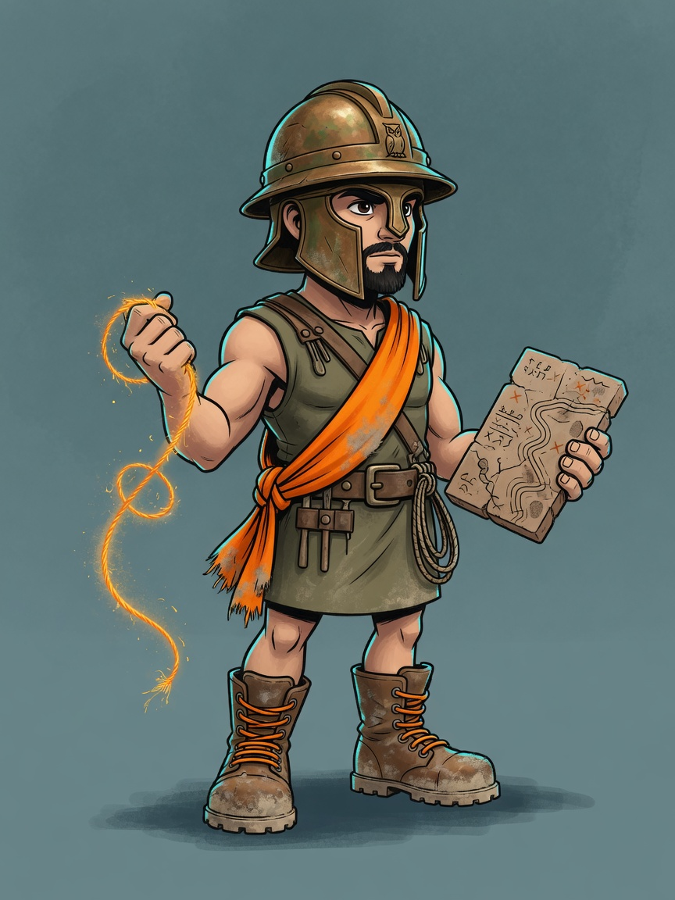

The Survey of the Two Lands
The heroes who charged in first died in the dark. This quarter, we became a company that can see.
“You cannot grow a range you cannot see — and you cannot see it if Australia and New Zealand are working off different facts.”

Two lands. One set of facts.
This quarter was about knowing our range, who each product serves, and where the gaps are — across Australia and New Zealand. A map drawn on split ground is a lie. So the market work and the one-company work travelled together.
Four labours. One road still to walk.
Four labours this quarter. The road back to customers is marked — we walk it next.
The Thread
Two countries. Two ways of working. People couldn’t see what the other shore was doing. So we laid a single thread.
Delivered this quarterWe made Blick easier to run as one company. The two lands can finally talk.
The Forge
A growing company that guesses is a company that breaks. We closed holes in the walls. We taught the research not to repeat itself. We proved the field instrument is fit for the job.
Part delivered · more landing in SeptemberQuality stopped being luck. Trust is a thing you hammer, not a thing you hope for.
The Map
You cannot grow what you cannot see. For the first time we have a shared map of the bentonite range — and we can see who is walking toward us.
Draft laid · deeper range and competitor work lands in SeptemberThis is the labour the whole quarter was for. The map is drawn. The next sheet is still coming.
The Hold
The right products in the right place. Less waste. Never one supplier between us and the job. The hold is being packed. It is not yet at sea.
Mostly landing in September · the loaded roomThis is the biggest remaining labour. Treat it as work in motion, not as a trophy.
The Road to the Games
Maps don’t sell. Presence does. Two industry gatherings are marked on the horizon. We walk them next.
Coming up next cycleKeep this as the road home — thin this quarter on purpose. The work of being seen is still ahead.
We did not finish the map. We became able to draw one.
Three of these four labours are already real. The market-picture and the stock work — the biggest strands — mostly land in September.
So the honest headline isn’t “we finished.” It’s this: we spent the quarter building the eyes. The payoff is next month, when we use them — and then walk back to the market.
The season of sight · Q3 2026If they remember one line, make it this: we bound the two lands, and we can finally see the range.